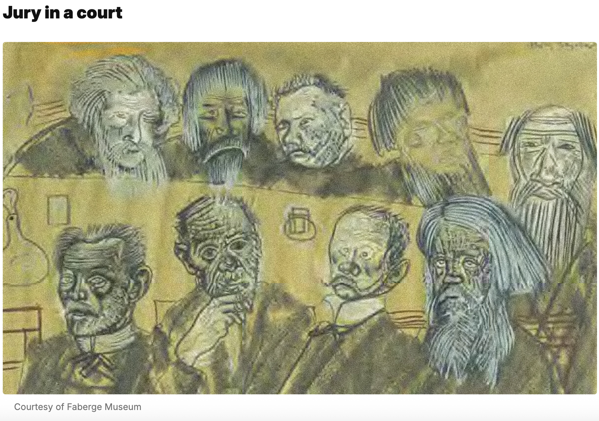

(dir. Iurii Moroz, Russia 2009)
show instead of a trial (656)
women for Mitya, men against him (657)
famous lawyer Fetyukovich, legal aspect of the case, not the moral one (658)
from Petersburg: Defender Fetyukovich and Prosecutor Ippolit Kirillovich
the Courtroom: center judges, right stern lower class jury, left Mitya and his defender (660)
Kahoot question. Id about whom Mitya says: "The Dog died like a dog!" (661)

artist Boris Grigoryev (1920s)
Witnesses for the prosecution
Grigory: the door was open, he was drunk and say nothing (665)
Rakitin: environment made Mitay kill, (667)
Snegirev shows up drunk (669)
Trifon turns out to be a thief himself (669)
Pan Mussyalovich is a cheat (670).
the accusation, neverthereless seems to be irrefutable (670).
medical science experts: two claim Mitya is insane, Varvinsky disagrees
Dr. Herzenstube tells the story of one pound of nuts and the neglected child
presents Mitya as a kind and grateful person,
a believer in God.
again psychology speculations are presented as sheer manipulation by Katerina Ivanovna who bring an expensive expert from Moscow.
Alesha testifies about amulet and 1500 in it
KI testifies that Mitia gave her money to save the father. Mitia says that KI's testimony ruined him (681)
Grusha testifies that Smerdyakov killed, the Mitia is not guilty, and Rakitin is her cousin and is ashamed of this fact because Grusha is a woman of questionable reputation (683).
Ivan testifies as a dying man (684)
Ivan brings the money (from Smerdyakov), confesses that he is guilty of the murder (686)
KI submits Mitya's letter to exhonerate Ivan/ or this is love as revenge (see below) (687)
Katya's confession why she gave 3000 to Mitya "to catch him out" (688)
KI's love is like revenge (691)
Prosecutor is encouraged by the new evidence (692).
Prosecution
Ippolit.
Narrator says that it was his swan song: he dies 9 months after it
Dostoevsky is sarcastic. Instead of something being born after 9 months, death follows the misleading positivist accusation of the innocent.
Positivist: believes only in material evidence and facts.
His facts require interpretation. He misinterprets all of them: "As to the legend of this amulet--it is hard even to imagine anything more contrary to reality" (701).
Prosecution claims the premeditated murder based on the letter provided by Katerina Ivanovna (703).
Pr. claims that Sm. begged Ivan to stay. We know how wrong the conclusions of the prosecution (708).
The prosecutor invokes the sixth person who could have killed (709), that is the devil :)
Prosecutor makes the wrong interpretation: Mitya jumped down to make sure that the only witness to his evil deed was no longer alive (714).
Psychology at Full Steam.
The Galloping Troyka.
The Finale of the Prosecutor's Speech
Mitya refers to Ippolit and his logical argument that flattens human complexity as "Bernards!" invoking the positivist scientist Claude Bernard (723).
spoke less correctly (725), appeals to hearts rather than just reason.
psychology is a stick with two ends (727)
One can draw whatever conclusions one likes from it (728)
Fetiukovich argues convincingly
that the robbery, the way the prosecution describes it, never happened.
We know about the existence of money under the matress only from Smerdyakov (who is dead now).
The money was hidden under the mattress but the bed from where supposedly the money was stolen was not rumpled at all (729).
No witnesses, no evidence that the robbery happened the way Smerdyakov narrated it.